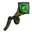

Durability is a game-concept which limits the amount of usage an item or structure has. It generally applies to items which can be equipped, however there are some other items such as the Sewing Kit or Pan Flute which also have it. An item with durability can be identified by a percentage number in front of its inventory graphic. For example an Axe will have a 100% over its icon when first created, and this number will change as the Axe is used. Different items use durability in different ways:
Tools lose durability whenever they are used for their specific actions and in the same way as weapons do when attacking something. The 3 most common Tools (Axe, Pickaxe, and Shovel) also have special versions with a much higher durability (Luxury Axe, Opulent Pickaxe, and Regal Shovel respectively).
| Name | # of Uses | Special |
|---|---|---|
| 100 | Chops down trees. | |
| 400 | Chops down trees. | |
| 33 | Mines mineable objects. | |
| 132 | Mines mineable objects. | |
| 25 | Digs up plants. | |
| 100 | Digs up plants. | |
| 25 | Digs up turfs. | |
| 75 | Deconstructs structures. | |
| 5 | Fixes up degraded clothing. | |
| 400 as Axe (and weapon), 134 as Pickaxe | Chops trees and mines mineable objects. | |
| 10 | Makes up to 5 Beefalo follow the player. |
Light emitting items gradually run out of fuel. Some of them can be refueled while others are done for. Miner Hat and Fire Pit for instance can be refueled when the run out of juice, while Torch and Pumpkin Lantern are done for in that case.
| Name | Burn time | Special |
|---|---|---|
| 4.5 min | Provides light and warmth. | |
| 6 min | Provides efficient light and warmth. | |
| 75 sec | Illuminates a small area and gives a little warmth. | |
| 1 Day | Provides light. | |
| 10 min in Summer, 13 min 20 sec in Winter | Illuminates a small area. | |
| 1 Day | Provides light. | |
| 11 min 40 sec | Provides light, drains sanity. |
Survival items lose durability when used by the player or when triggered by mobs. Some of them can be used as weapons but will lose durability much faster.
| Name | # of Uses | Special |
|---|---|---|
| 8 | Captures Birds. | |
| 8 | Captures rabbits and other small animals. | |
| 3 | Restores sanity and health at the expense of hunger. | |
| 6 | Restores sanity and health at the expense of hunger. | |
| 20 (Only when attacking) | Prevents sanity loss from rain. | |
| 10 (4 when attacking) | Catches insects. | |
| 9 (3 when attacking) | Captures fish and eels in ponds. | |
| 20 | Grows seeds. | |
| 30 | Grows seeds faster. |
Weapons use Durability to determine the number of times they can hit something before breaking. A Spear for example losses 0.66% of its durability each time it is used to attack something, allowing it to be used 150 times. Each weapon has a different number of uses.
| Name | # of Uses |
Special |
|---|---|---|
| 150 | ||
| Unlimited | Spoils like food in 10 days. | |
| 100 | Dropped by Tentacles. | |
| 100 | Drains Sanity. | |
| 10 | Ranged, must be caught. | |
| 75 | Leeches health at cost of sanity. | |
| 10 | Damages mobs that walk over it. | |
| 150 | Spawns shadow tentacles on hit | |
| 10 | Puts nearby mobs to sleep. |
Protective items include Armors and Walls. Armors are items worn by the player. Armor's durability functions like extra Health for the character wearing it. Each type of Armor (Grass Suit, Log Suit, or Marble Suit) can absorb a certain amount of damage before breaking (225, 450, and 1050 respectively). When a character is hit, the armor takes a percentage of the total damage and the characters health takes the remainder. The number show on the armor's inventory icon is not actually the amount of damage it can still absorb, but the percentage of its own starting health (for example if a Grass Suit shows it has 50% durability left, it can still absorb 112 damage before breaking). Walls can be placed to protect or limit access to an area from other mobs. They can be attacked and destroyed, but can be repaired and even upgraded to last longer. Stone Walls and Thulecite Walls are the only non-flammable walls.
| Name | % Absorbed | Durability | Special |
|---|---|---|---|
| 60% | 225 | ||
| 80% | 450 | ||
| 95% | 1050 | 30% Speed Reduction. | |
| 95% | 750 | Drains Sanity. | |
| 80% | 1050 | Absorbs 100% damage while hiding inside. | |
| 90% | 1800 | Moderate sanity gain. | |
| 80% | 450 | ||
| 80% | 750 | Insects only. | |
| 90% | 750 | ||
| 90% | 1200 | Summons protective forcefield. | |
| 100% | 50-100 | Flammable. | |
| 100% | 100-200 | Flammable. | |
| 100% | 200-400 | Non-flammable. | |
| 100% | 500-800 | Non-flammable. |
The durability of clothing indicates the amount of wear-and-tear the clothing has suffered. When equipped, a piece of clothing will gradually wear out, and its durability will decrease. Each clothing item wears at a different rate, so if a vest and a hat are equipped at the same time, one may wear out before the other. Additionally, clothing is the only item type which can have its durability restored, which is done by using the Sewing Kit.
| Name | Wear Time | Special |
|---|---|---|
| 6 Days | Minor sanity gain, spoils like food. | |
| 10 Days | Moderate sanity gain, minor insulation. | |
| 15 Days | Minor sanity gain, moderate insulation. | |
| 15 Days | Minor sanity gain, great insulation. | |
| 5 Days | Minor insulation. | |
| 8 Days | Moderate sanity gain. | |
| 8 Days | More birds land, minor sanity gain. | |
| 10 Days | Tiny sanity gain, moderate insulation. | |
| 10 Days | Great insulation, Beefalo don't attack during mating season. | |
| 25 Days | Great sanity gain, moderate insulation. | |
| 8 Days | Hunger loss is slowed by 60%, minor sanity gain. | |
| 3 min | Makes up to 9 followers out of Pigs and Bunnymen at the expense of sanity. | |
| 2 min | Makes followers out of Spiders at the expense of sanity. |
Staves lose durability when they're used while Amulets usually lose it over time while being worn. Chilled Amulets and Nightmare Amulets wear out in the same way as clothing, staves wear out as weapons or tools and Life Giving Amulet will lose durability itself by healing the character every 30 seconds if his/her/its health is not full.
| Name | Wear Time/No. of uses | Special |
|---|---|---|
| 20 uses(healing)
1 (resurrection) | Converts 5 hunger points and 5% or its durability into 5 HP. Revives the player on death. Minor sanity gain. | |
| 6 min | Drops body temperature, can freeze attacking mobs. Minor sanity gain. | |
| 4 min | The character experiences insanity, minor sanity loss. | |
| The Lazy Forager | 225 uses | Picks up items on the ground automatically. |
| 8 min | Provides light and speed boost, minor sanity gain. | |
| 5 uses | Items require half the resources to be built, minor sanity gain. | |
| 20 uses | Sets burnable objects and mobs on fire. | |
| 20 uses | Freezes monsters and animals. | |
| 5 uses | Teleports a mob or the character to a random location or to a Telelocator Focus if built. | |
| 20 uses | Teleports the player to cursor if available, boosts speed. | |
| 20 uses | Summons a star to provide light, and heat, with a big sanity aura. | |
|  Deconstruction Staff | 5 uses | Destroys a structure or item for up to 100% of items, minus gems. |
Books are exclusive items to Wickerbottom. Each one of them has a different amount of uses and their own special effect.
| Name | No. of uses | Special | |
|---|---|---|---|
| 3 | Spawns 30 birds in a ring formation. | ||
| 5 | Regrows picked plants, advances trees in their life cycle, immediately makes crops harvestable. | ||
| 5 | Puts nearby mobs to sleep. | ||
| 5 | Causes 16 lightning strikes around the player. | ||
| 5 | Summons 3 tentacles. |
Note : Any item or structure not listed above has either 1 or unlimited uses.
| Gameplay Mechanics | |
| Activities | Cooking • Crafting • Farming • Fishing • Sleeping |
| Environment | Day-Night Cycle • Moon Cycle • Nightmare Cycle • Earthquake • Lightning • Rain |
| Seasons | Summer • Winter • ( Autumn • Spring ) |
| Mechanics | Beard • Characters • Controls • Death • Durability • Experience • Fire • Food Spoilage • Freezing ( Overheating ) • Health • Hunger • Light • Map • Naughtiness • Non-renewable resources • Sanity • Saving (Wetness) |
| Mode | Adventure Mode • Sandbox Mode • Caves • Ruins |
| Others | Pig Village • Road (Trail) • Set Piece • Things |